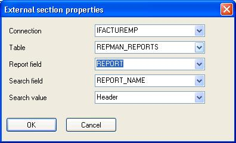

Usually the reports of a project have the same page header or the same report header. For example if you are designing several reports related to a enterprise, may be interesting to include the logo and the name of the enterprise. Then you cut and paste this header in about 100 reports. As a generic application, when you sell it the new customer wants to change the position of the logo and center the enterprise name, will you change the 100 reports?
The answer to this problem is to store this page header in a external file and especify all the reports to load the page header from this file, so changing this file you are changing the 100 reports at once.
Each section in Report Manager have External path property, when the report is loaded, each section with this property assigned will try to load the section from the specified file, the external path can be an expression by preceding the string by the @ symbol.
When working with external sections you are responsible for writing and reading them . The first time you want to include a internal section you assign the External path property, then right click the External Path property and select save option of the popup menu.
Next time you open the report it will try to load the section from the file or field. If you want to use this external section in another report you assign External Path property and select load option of the popup menu.
External section can be stored in a database table, click in 'External database' property and Report Designer will show a dialog where you can enter data about where the section is stored:

You can dropdown the combo boxes to see the available tables for the connection, fields and values, if you enter a new value the designer will ask you if you want to create a new record in the table to store the section.